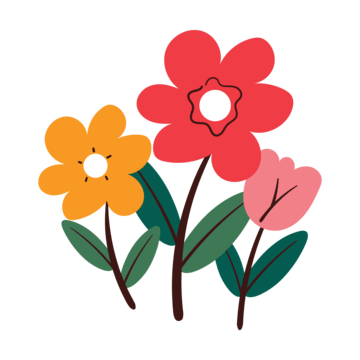
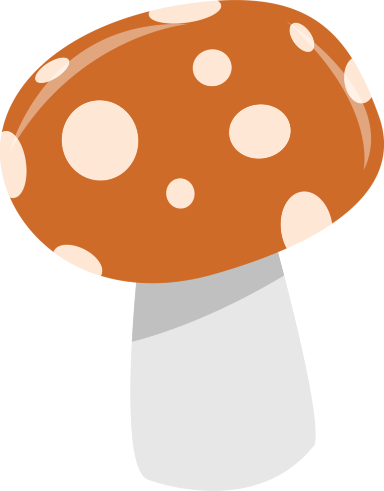

Wild animals walk freely without the frear of humans finding them. The sun is always shining and theres never a bad day. There is always a soft, warm breeze that carries the leaves with it. Jackals run through the forest floor, playing amongst each other all day. This place remains a paradices for its enhabitants.
potion to change the color of the background:


Option 1: Pick flowers from the meadow

Option 2: Look at the strange mushrooms